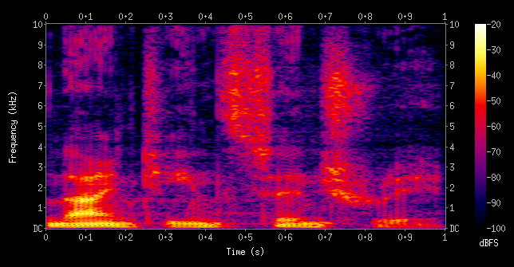

Tender Matching People to Recipes
Tender: Matching People to Recipes
Justin Xu, Makena Low, Joshua Dong
Github Repo: https://github.com/justinxu421/recipe_rex
Problem Definition
You’re at the grocery store, looking through the shelves of copious options, unsure of what you’d actually enjoy cooking or eating. You have a sense of what you’re craving, but a search on Google for your latest craving can take an hour and many tabs to surface the recipes that hit it. Your cravings also keep changing. New Years’ resolutions for healthy food turn into longing for quick meals, which cascade into a phase of comfort food. Discovering new food takes a lot of effort.
Introducing Tender
Our app is like Tinder. But instead of matching people to people, it matches people to recipes with a similar focus on simplicity. When you first open the app, you’re shown the bios of 4 recipes: their profile photos, names, and who they are. After 10 rounds of choices, our app recommends the best matches to your craving from over 2000 recipes curated by blogs covering many traditional Asian recipes and fusion concepts.
As you choose, we guess your preferences for meats and starches and show them to you in graphs on the bottom of the screen. This helps narrow down our search for the most similar recipes to the ones you chose. And if you’re in the mood for desserts or sides instead of a main dish, you can choose to explore those options on the side bar.
In our next sections, we’ll describe how we evaluated our app, designed the algorithms under the hood, related works, and reflections on our work.
Related Work
Recommendations are a pretty hot topic in today’s society, from apps like Spotify and TikTok, which rely on quickly changing trends and massive amounts of input data / user information in order to build out their algorithms. As a result, many of these algorithms didn’t seem to satisfy the restrictions of our use case, as they relied on repeat user experiences and massive amounts of data.
However, inspiration for the algorithm we utilized for this project was partially taken from the original 2010 Youtube Recommendation Paper [1]. This paper showed a two-step recommendation algorithm where the first step was generating candidates based on a user’s recent activity and the second step was a ranking algorithm which was based on user preferences, which seemed to be a general interpretable approach for our problem.
Video Demo
System Evaluation
To validate the quality of our recommendations, we compare our recommendations to a random sample of recipes, and the user has to choose which they prefer the most. The percentage of their choices that we recommend is our validation score. If it’s 50%, we’re doing no better than random, giving us a natural baseline.
To perform a slice based analysis of our recommendations on different types of cravings, we designed 8 cravings for soupy and stirfry main dishes. We then asked 10 young adults in their early 20s to choose a craving, and use the app. We intentionally left the cravings up to interpretation and gave users the freedom to choose recipes.
Across our 54 user tests, our recommendation system achieved a validation score of 68%, beating our baseline by 18%. We scored 67% across soupy dishes and 71% across stir-fry dishes. Looking at the breakdown of scores, we find performance on vegetable soup and vegetarian stir-fry to be close to average, a surprise since these are the least represented dishes from our recipe websites.
System Design
Our modeling relied on libraries like FastText [2], scikit-learn [3], Pandas [4], and NumPy [5]. We chose Streamlit [6] for the front end and deployment of our app to keep our codebase in Python and for faster iteration. Below is a simple diagram of our algorithms. We’ll step through each part in the next sections.

Feature Engineering our Recipe Embeddings
Using recipe-scraper [7], we found the following features for all our recipes.
We curated recipes for main dishes, desserts, and sides, receiving recipe counts of 1737, 362, 221 respectively. For each recipe, we created a joint embedding of the nutrition and ingredients.
Our nutrition embedding gave a binary label to a recipe for exceeding the 75th percentile of fat, protein, carbohydrate, sodium, or sugar content across recipes.
Our ingredients embedding was created in a few steps. First, unigrams and bigrams were extracted from every list of ingredients. Bigrams captured words like “soy sauce” and “chicken breast”. Among the 989 which occurred over 20 times, 359 ingredient grams were manually labeled and kept. Each of these grams were mapped to a 300-dimension embedding using a pretrained FastText language model. FastText [2] forms word embeddings by averaging subword embeddings. This allows it to generalize to unseen vocabulary in our ingredient grams, unlike Word2Vec [11]. To create a sentence embedding from all the ingredients of a recipe, we took an inverse frequency weighted average of the individual ingredient embeddings based on the smooth inverse frequency method introduced by Arora et al [8]. Compared to using SentenceBERT [12], this better takes advantage of our domain specific ingredient frequency.
To create a joint embedding with a balanced influence from the nutrition and ingredients, we projected our ingredient embeddings into the subspace formed by their first 5 principal components, which explained 49% of the variance. Extending to 10 principal components would have explained an additional 12% of variance.
To evaluate the semantic understanding represented by our principal components, we examined how cuisine is clustered along the first two principal components. Below on the left includes Chinese cuisine in bright red, our dominant class. To better visualize the clustering of our minority classes, we show the same graph excluding Chinese cuisine on the right. Without explicitly including cuisine in our embedding, we find that it keeps similar cuisines close to each other while also capturing intra-cuisine variance. This supports our hypothesis that our embedding incorporates semantic understanding.
Our final joint embedding was a 5-dimensional ingredient embedding stacked on a 5 dimensional nutrition embedding.
Designing our Recommendation Algorithms
The main driver to our recommendation engine was a k-nearest neighbor [13] recommendation system. Given the fact that our dataset was relatively small, at around 2000 recipes, a nearest neighbor approach seemed to make the most sense in terms of finding similar recipes with cosine distance.
To make it a true machine learning application, our app needed to learn user preferences as it proceeded! To do this, we generated a coarser, more interpretable labeling system for every recipe to capture some taste preferences a user might have coming in. The two main categories we selected were meat and starch. These two categories were chosen given the fact that the user may have dietary restrictions. The labels were generated through a title / ingredient list keyword match.
We see that these categories are well distributed across our ingredient embedding space.
Given these taste labels, we can then restructure our search problem as a multi-armed bandit problem [10]. The goal of the algorithm is to generate a sampling procedure of the arms to find with high accuracy what the expected payout of each arm is. In this problem, our “arms” are the individuals taste preferences, and the payout is the probability given all choices that the individual will select a particular preference. Since the hypothesis is that users come into our app with a particular taste preference in mind, they will likely select recipes matching that preference.
One solution to the bandit problem with optimal regret bounds (rough amortized long term deviation from optimal) is the UCB (Upper Confidence Bound) [9] algorithm, which selects the arm with the highest upper bound to the confidence interval of the payouts.
This approach simulates exploration vs. exploitation since in the beginning, this algorithm will select taste preferences that have not been selected yet (due to high variance), but as the user proceeds, it will start to recommend more recipes matching the user’s preferences (exploitation phase), as it gains higher confidence for the value of their preferences.
Reflections
Overall, the project experience was very positive. Our team’s general dynamic and workflow worked well together. Sometimes it was a little difficult to divide up work, as some next steps were a little conditional on the previous part, so it was hard to parallelize, especially in a remote situation. On the other hand, since this project was a full application, we were able to divide work flow into the general “front end” vs. “back end” aspects that we had to handle to some extent, switching off who was working on what at different stages, and were still able to build team camaraderie by pair programming too.
The tech stack that we decided on in the beginning also worked out well, since everything was able to be in python and easily integrated together. We had to pivot a couple of times in terms of what we were designing, especially in the direction of away from black box approaches and more into the interpretable methods + UX considerations.
If given more time, we would try to incorporate more features to create a richer embedding space in combination with more recipes in our database to generate more personalized recommendations. On the engineering side, we’d also try to fully deploy our app, incorporating database storage and user memory in order to preserve information across multiple uses of our app. This would also enable many more machine learning features, including labeled data as we log users using our app, and collecting information for personalization. Streamlit’s public deploy also wasn’t able to handle multiple users using the app at the same time because of shared state space. We’d probably want to migrate our tech stack to something more robust, as well as provide more flexibility in terms of the UX design.
We were not super ambitious about the technology we used, so we’d like to also incorporate some of the concepts we learned in class, like online learning and edge computing, and setting up the general DevOps workflow (maybe if we turn our app into a startup)!
Broader Impact
We see an app like this flattening the activation energy for young adults in a hurry to plan out meals they’ll enjoy cooking and eating. Instead of many searches and open tabs to gather together a few options that satisfy one’s craving, they can come to an app like ours.
One audience we have had a challenge serving is people with dietary restrictions. For example, an early version of our app had a difficult time distinguishing red meat from non-red meat. Using filters learned by our UCB algorithm and sourcing more recipes that are kosher and vegetarian has helped. Our app could unintentionally exclude guests with dietary restrictions from the tables of users who come to use it often.
We attempted to combat this problem by being mindful of selecting recipes from a variety of sources and cuisines, including many vegetarian dishes + a variety of meats / taste profiles. However, naturally, our dataset is still heavily Chinese/Korean/Japanese skewed due to the popularity of East Asian cuisine.
References
- Davidson, James & Liebald, Benjamin & Liu, Junning & Nandy, Palash & Vleet, Taylor & Gargi, Ullas & Gupta, Sujoy & He, Yu & Lambert, Michel & Livingston, Blake & Sampath, Dasarathi. (2010). The YouTube video recommendation system
- P. Bojanowski, E. Grave, A. Joulin, T. Mikolov, Enriching Word Vectors with Subword Information
- Fabian Pedregosa, Gaël Varoquaux, Alexandre Gramfort, Vincent Michel, Bertrand Thirion, Olivier Grisel, Mathieu Blondel, Peter Prettenhofer, Ron Weiss, Vincent Dubourg, Jake Vanderplas, Alexandre Passos, David Cournapeau, Matthieu Brucher, Matthieu Perrot, Édouard Duchesnay. Scikit-learn: Machine Learning in Python, Journal of Machine Learning Research, 12, 2825-2830 (2011) 6.
- Wes McKinney. Data Structures for Statistical Computing in Python, Proceedings of the 9th Python in Science Conference, 51-56 (2010)
- Charles R. Harris, K. Jarrod Millman, Stéfan J. van der Walt, Ralf Gommers, Pauli Virtanen, David Cournapeau, Eric Wieser, Julian Taylor, Sebastian Berg, Nathaniel J. Smith, Robert Kern, Matti Picus, Stephan Hoyer, Marten H. van Kerkwijk, Matthew Brett, Allan Haldane, Jaime Fernández del Río, Mark Wiebe, Pearu Peterson, Pierre Gérard-Marchant, Kevin Sheppard, Tyler Reddy, Warren Weckesser, Hameer Abbasi, Christoph Gohlke & Travis E. Oliphant. Array programming with NumPy, Nature
- Ashish Shukla, Charly Wargnier, Christian Klose, Fanilo Andrianasolo, Jesse Agbemabiase, Johannes Rieke, José Manuel Nápoles, Tyler Richards Streamlit
- recipe-scraper https://github.com/hhursev/recipe-scrapers/
- Sanjeev Arora and Yingyu Liang and Tengyu Ma. A Simple but Tough-to-Beat Baseline for Sentence Embeddings. ICML 2017
- Sébastien Bubeck, Nicolò Cesa-Bianchi: Regret Analysis of Stochastic and Nonstochastic Multi-armed Bandit Problems. CoRR abs/1204.5721 (2012)
- Auer, Peter, et al. “The nonstochastic multiarmed bandit problem.” SIAM journal on computing 32.1 (2002): 48-77.
- Mikolov, Tomas, et al. “Efficient estimation of word representations in vector space.” arXiv preprint arXiv:1301.3781 (2013).
- Reimers, Nils, and Iryna Gurevych. “Sentence-bert: Sentence embeddings using siamese bert-networks.” arXiv preprint arXiv:1908.10084 (2019).
- Cunningham, Padraig, and Sarah Jane Delany. “k-Nearest Neighbour Classifiers–.” arXiv preprint arXiv:2004.04523 (2020).